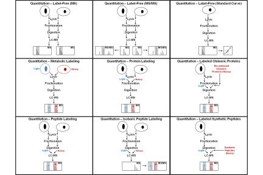
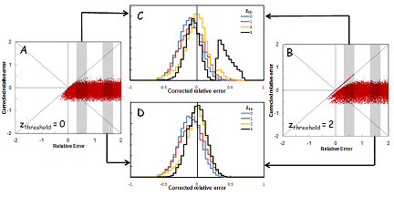

| Laboratory of Computational Proteomics Research: Quantitation |
|
Quantitation of proteins and peptides
Mass spectrometry (MS)-based quantitative proteomics has been applied to solve a wide variety of biological problems, and several MS-based workflows have been developed for protein and peptide quantitation (Fig. 1). In mass spectrometric quantitation methods it is usually assumed that the measured signal has a linear dependence on the amount of material in the sample for the entire range of amounts being studied. A prerequisite for accurate quantitation is that unwanted experimental variations in sample extraction, preparation, and analysis be minimized, and it is therefore critical that each step in the workflow is optimized for reproducibility.

When quantitation of proteins in complex samples is based on the intensity of peptide precursor and fragment ions, interference can distort the measurements. It is important to detect and correct for these interferences. We used computer simulations as a tool to investigate the feasibility of correction for interference in MRM analyses. In our simulations, it was assumed that the expected relative intensity of the transitions for a peptide is known. Hypothetical interference was added to one or more transitions, and random noise was added to all transitions. The distribution of the noise was obtained from repeated measurements. Interference was detected by measuring the deviation of the intensity ratios of transitions from the expected ratios, and detecting outliers. The transitions with interference were removed and the peptide quantity was calculated using only the transitions without interference.

References
|